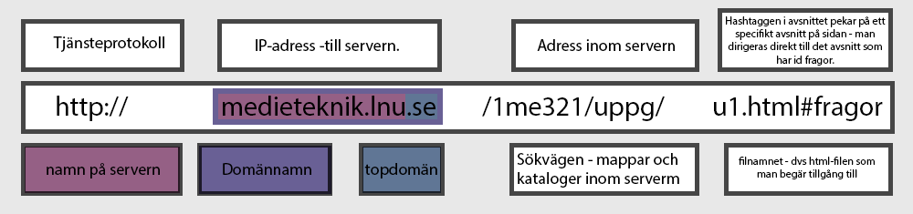

En kort beskrivning av protokollen HTTP, TCP och IP:

-
http-protokollet
- Detta protokoll bestämmer hur kommunikationen fungerar mellan klienten och servern när man begär tillgång till en webbsida. Klienten (exempelvis datorn man sittern vid) skickar ett synkpaket till servern. Servern tar emot detta, och skickar tillbaka en bekräftelse på synkpaketet. Vid detta tillfälle har de upprättat en förbindelsen. Därefter skickar klienten över en begäran till servern, och ber om att få tillgång till en sida. Server tar emot begäran, letar reda på filen som begärs, och skickar över html-filen. Webbläsaren börjar då tolka detta på sin sida. När alla filer som behövs har skickats över, så som bilder, blir webbläsaren klar och visar sidan i sin helhet. Därefter kopplas förbindelsen ner.
-
tcp-protokollet
- Transmission Control Protocol - detta protokoll består av en sändare och mottagare. På sändarens sida delas meddelandet som ska skickas över upp i mindre paket, numreras, och skickas vidare till den undre nivån - IP-protokollet. På mottagarens sida tas detta upp (på IP-protokollets nivå) och skickas upp i protokollstacket tillbaka till TCP-nivån. TCP-mottagaren sätter sedan ihop dessa paket till meddelanden och skickar dessa till de program de är avsedda för.
-
ip-protokollet
- Internet Protocol - Sändaren inom detta protokoll adresserar meddelanden som ska skickas över. Mottagaren skickar en bekräftelse om att paketen mottagits. Annars skickar den en begäran om att de ska skickas om.
Vad betyder allt i en URL?

-
om de olika delarna
- Htttp i URL:en syftar på tjänstprotokellet, dvs. på vilket sätt datöverföringen i nätverket ska ske. I praktiken betyder detta hur din dator (klienten) ska kommunicera med servern (som är där sidan du vill komma åt ligger lagrad.) Därefter följer namnet på servern - detta ger adressen till IP:et. Ofta kallas detta domännamn. Ett exempel är ordet mediamarkt i URL:en www.mediamarkt.com. I slutet på domännamnet finns toppdomänen (i detta fall .com). Toppdomäner har skapats för att siginifiera om det är en organisatorisk sida eller en nationell sida. Exempel på organisatoriska toppdomäner är .gov (som ofta används av regeringar) eller .com (som används av coorporations, dvs. av företag). Därefter skriv ett "/" tecken, följt av sökvägarna till de mappar man vill komma åt som ligger på servern. Dessa mappar har en trädstruktur - dvs att man först letar upp mappen som står först i URL och sen söker man tillgång till nästkommande mapp, som då ligger inom den första mappen, tills man kommer fram till den html filen man vill komma åt. Denna html-fil är sedan det som visas i webbrowsern.